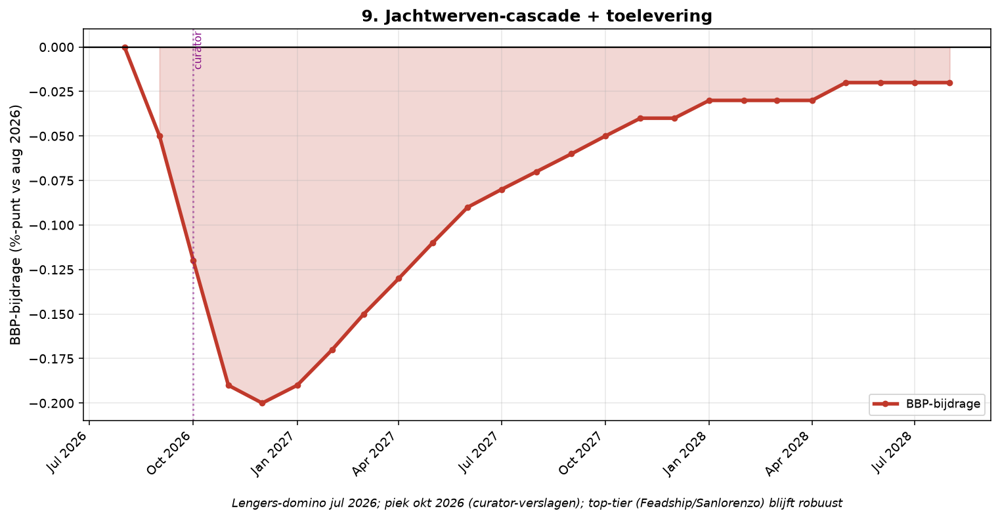

Element 9 — Jachtwerven-cascade (Lengers 28 juli 2026)
Breuk-element 9 van 28 in de systeemanalyse Nederland aug 2026 – aug 2028.
Door Jacobus van Merksteijn

Grafiek: Jachtwerven-cascade (Lengers 28 juli 2026).
9.1 Lengers Yachts: de eerste zichtbare domino
Kernfeiten Lengers Yachts B.V.:
- Failliet verklaard: 28 juli 2026 door Rechtbank Midden-Nederland
- Insolventienummer: F.16/26/314
- Curator: mr. J.M. van Raaijen (Okkerse & Schop Advocaten, Almere)
- KvK-nummer: 30189780
- Adres: Westzeedijk 2, Muiden
- Opgericht: 1970 (56 jaar oud)
- Merken (importeur EU): Sanlorenzo, Bluegame, Prestige, SACS, Pirelli Speedboats
Financieel (KVK jaarrekening 2023):
- Omzet 2023: bijna €100 miljoen
- Nettowinst 2023: €1,3 miljoen
- Kortlopende schulden 2023: bijna €14 miljoen (opgelopen van €8 mln 2022)
- Balans-voorraad 2023: €100 miljoen (blijkt fictie te zijn --- zie element 10)
**Verzekeringsnieuws 3 aug 2026 (curator-briefing): 2 jaar rode cijfers
voor faillissement; laatste boekjaar omzet halveerde.**
Verklaringen van management (aan curator):
- Post-COVID vraagterugloop
- Groter aanbod nieuw + gebruikt jachten
- Tragere voorraadomloop
- Stijgende rentekosten voorraadfinanciering
- Hoge onderhoudskosten
- Mislukte herstructurering 2024-2025
Werkelijke verklaring (analyse Open Vizier augustus 2026): 5-7 jaar
boekwaarde-fictie voorraad; jachten <35 m Europees onverkoopbaar door
BPM-verhoging + hoge rente + wetgeving-onzekerheid; top-tier werven
(Feadship, Sanlorenzo direct, Damen) blijven robuust maar middensegment
stort in.
9.2 Reeks NL-jachtwerven-faillissementen 2018-2026
-----------------------------------------------------------------------------
Datum Bedrijf Locatie/omvang Oorzaak
----------------- ----------------- -------------------- --------------------
mei 2018 Jetten Shipyard Sneek, 35 wn Bouwopdrachten voor
te lage bedragen
juli 2019 Moonen Yachts Den Bosch, 39 wn Mexicaanse eigenaar
AHMSA-crisis
mei 2023 Jachtwerf Jongert Medemblik Torenhoge schulden +
uitstel van betaling
feb 2024 Icon Yachts Ton van Dam Quote Surséance omgezet in
500 faillissement
sep 2024 Long Island Dave de Groot Vruchteloze
Yachts reddingspogingen
okt 2024 Holterman Meppel, sinds 1964 Verlies sinds 2022 +
Shipyard aluminium + geen
orders
dec 2024 Nobiskrug (DE) Lars Windhorst 4 bedrijven onder
FSG-Nobiskrug
failliet
jan 2025 Jachtwerf Voorschoten Faillissement
Allemansgeest
mei 2025 Aquanaut Yachting Sneek, 60+ jaar Personeelskrapte +
grondstofprijzen
jul 2025 Damen Shipyards €270 mln Tweede Kamer
reddingslening onderbreekt reces
mei 2026 Italian Sea Group AEX-genoteerd -37% Verliezen breken
wettelijk
kapitaal-minimum
28 jul 2026 Lengers Yachts Muiden, opgericht Omzet €100 mln,
1970 schulden opgelopen
-----------------------------------------------------------------------------
9.3 Bronnen
• Yachtbuyer 29 juli 2026: Lengers failliet --- https://www.yachtbuyer.com/en-us/news/dutch-luxury-yacht-dealer-lengers-yachts-declared-bankrupt • Faillissementsdossier Lengers --- https://www.faillissementsdossier.nl/faillissement/1984419/lengers-yachts-b-v • Insolventietracker Lengers F.16/26/314 --- https://insolventietracker.nl/failliet/f.16_26_314/lengers-yachts • SuperYachtTimes 30 juli 2026 --- https://www.superyachttimes.com/yacht-news/lengers-yachts-declared-bankrupt • Quotenet 30 juli 2026 --- https://www.quotenet.nl/zakelijk/a73307542/jachtimporteur-lengers-yachts-failliet-verklaard/ • Verzekeringsnieuws 3 aug 2026: curator-briefing --- https://www.verzekeringsnieuws.nl/artikel/129432-mayday-mayday-we-are-sinking • Watersport-TV Lengers --- https://www.watersport-tv.nl/tp-31400-2/news/lengers%20yachts • NLTimes 10 juli 2025: Damen €270 mln --- https://nltimes.nl/2025/07/10/mps-interrupt-summer-recess-vote-eu270-million-rescue-loan-damen-shipyards • Reuters 22 mei 2026: Italian Sea Group -37% --- https://www.reuters.com/legal/litigation/yacht-maker-italian-sea-group-plunges-losses-breach-legal-capital-threshold-2026-05-22/
{width="6.5in" height="3.375903324584427in"}
*Jachtwerven-cascade: piek okt 2026 (Lengers curator-verslagen);
top-tier robuust*